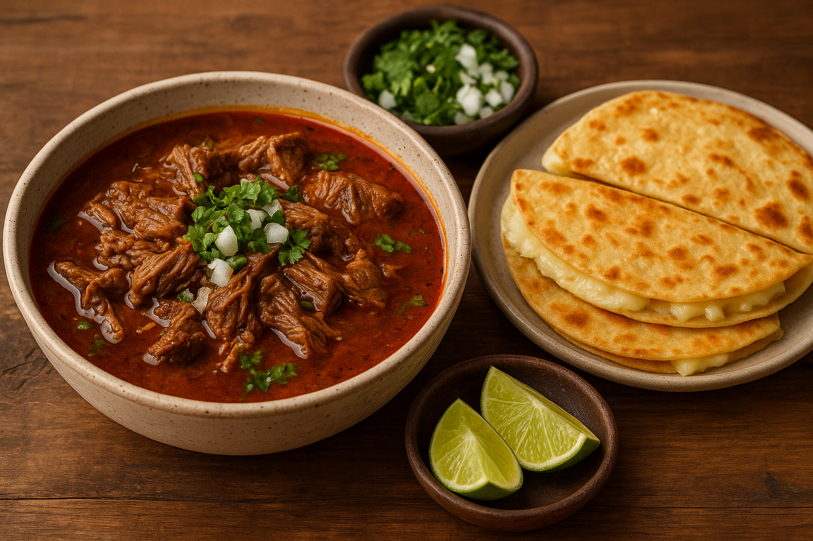

Birria con Quesadillas de Queso
Ingredients
- 2½ lbs beef chuck roast (cut into large chunks)
- 1 tablespoon salt
- 1 teaspoon black pepper
- 2 tablespoons olive oil
- 3 dried guajillo chiles (stemmed and seeded)
- 2 dried ancho chiles (stemmed and seeded)
- 1 chipotle pepper in adobo sauce
- 1 medium onion, quartered
- 5 cloves garlic
- 1 tablespoon apple cider vinegar
- 2 teaspoons oregano
- 1 teaspoon cumin
- ½ teaspoon cinnamon
- 2 bay leaves
- 4 cups beef broth
- 1 cup water
- 2 roma tomatoes, roasted or broiled
For Serving:
- Corn tortillas
- Shredded Oaxaca or Monterey Jack cheese
- Chopped onion and cilantro
- Lime wedges
Directions
- Toast the dried guajillo and ancho chiles in a dry skillet for 30 seconds per side until fragrant. Soak them in hot water for 10–15 minutes until softened.
- Blend the softened chiles with the chipotle pepper, roasted tomatoes, onion, garlic, vinegar, oregano, cumin, cinnamon, and about 1 cup of beef broth until smooth.
- Season the beef chunks with salt and pepper. In a large pot or Dutch oven, heat olive oil over medium-high heat. Sear the beef on all sides until browned, about 5 minutes per side.
- Pour the blended chile sauce over the beef. Add the remaining beef broth, water, and bay leaves. Stir to combine. Cover and simmer on low heat for 2½ to 3 hours, until the beef is tender and easily shreds with a fork.
- While the stew finishes cooking, heat a skillet over medium heat. Place a tortilla in the pan, add cheese, and fold it over. Cook until crispy and golden on both sides.
- Shred the beef and serve it in bowls with a generous ladle of broth. Add chopped onion, cilantro, and a squeeze of lime on top. Serve with the cheese quesadillas on the side for dipping into the rich, spicy broth.
Notes
- Add a diced potato or a handful of hominy for a heartier stew.
- Substitute goat or lamb for beef for traditional-style birria.
- For extra richness, top with a drizzle of crema or avocado slices.
Nutrition
Serving Size: 6 servings (about 1 1/2 cups birria with tortillas and toppings)
Calories: 560
Fat: 32 g
Carbs: 18 g
Protein: 48 g